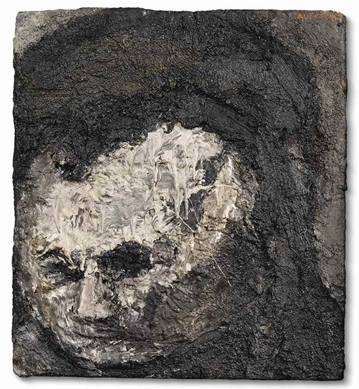
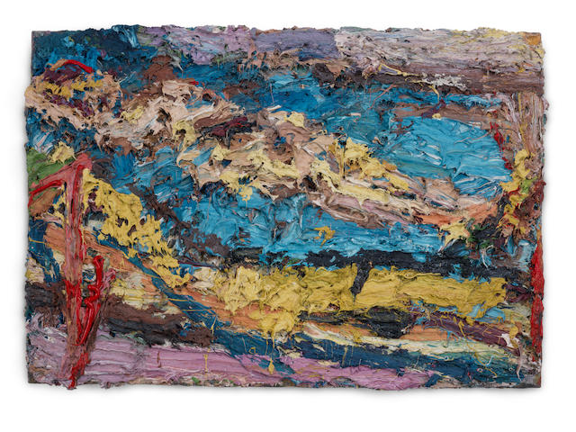
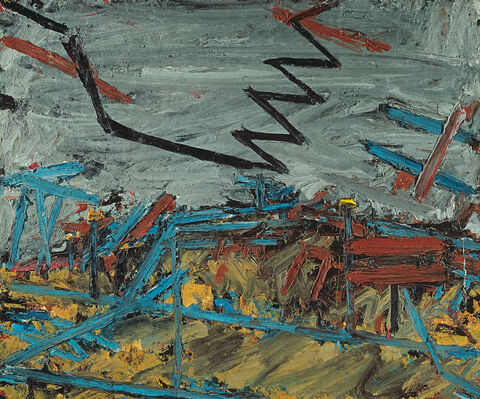

important art
Head of Leon Kossoff 1954
Painter and friend Leon Kossoff was one of Auerbach's favorite subjects for himself. Here the fellow School of the London artist's face occupies nearly the entire picture plane, his head slightly tilted downward. Auerbach draws him in ghostly shades of grays, blacks, and whites; his features threatening to blur or vanish under the viscous layers of paint, which are almost sculptural, resembling one of Giacometti's attenuated figures. Kossoff's eyes are dark abysses, his mouth set in a taut line of contemplation as if he were a saint in an illuminated manuscript enduring afflictions of the soul.
----------------------------------------------------------------------------
E.O.W. (Estella "Stella" Olive West)
E.O.W. was Auerbach's first obsession as a painterly subject. This work, one of several, is painted so thickly that the subject is difficult to recognize; however, after careful looking and the title, the viewer can see the naked figure of a woman, on a bed with a blue coverlet. It is an special piece of work; she is clearly comfortable, lying on her back and propping one arm up behind her head. She seems to be looking casually out at the viewer, and her figure stretches from one side of the canvas to the other. The creamy color of her flesh and the bright blue of her bed are the dominant colors, while the wall and floor are primarily shades of taupe and burnt gold.
----------------------------------------------------------------------------
Bacchus and Ariadne (1971)
This piece is modeled after Titian's work of the same name concerning a tale from Ovid, in which Ariadne, abandoned by Theseus, encounters the god Bacchus and his procession of revelers. Auerbach's rendition is completely abstract, consisting of dynamic horizontal, vertical, and diagonal brushstrokes in vibrant shades of cherry red, cerulean, golden yellow, abandoned grass green. Though referencing Titian's work might help viewers interpret the brushstrokes as trees, figures, or the sea, Auerbach's painting is ultimately devoid of any explicit figurative references

----------------------------------------------------------------------------
Primrose Hill
Auerbach's landscapes are like his portraits: intuitively painted, comprised of manifold perspectives, and precisely and methodically crafted. Primrose Hill, in North London near his studio, was one of Auerbach's favored landscape subjects. Like his many sitters, he painted it numerous times over the years, in all seasons and times of day.
----------------------------------------------------------------------------
Head of J.Y.M. II
Juliet Yardley Mills, or J.Y.M., was a professional artists' model and posed for Auerbach twice a week for many years. This is one of the most notable works of her, and though she is not as abstracted as, say, the aforementioned E.O.W. work, one would be hard-pressed to call this a "realistic" likeness. Both the people and style of the painting pack a visual punch; the impact derives from the graceful but slightly disturbing curve of her neck and head back into the picture plane.

----------------------------------------------------------------------------
Chimney in Mornington Crescent - Winter Morning
Auerbach delights in painting his immediate surroundings of Camden, the borough in London where he lives and works. He has painted numerous works of the street of Mornington Crescent, here depicting it on a frosty, barren morning.